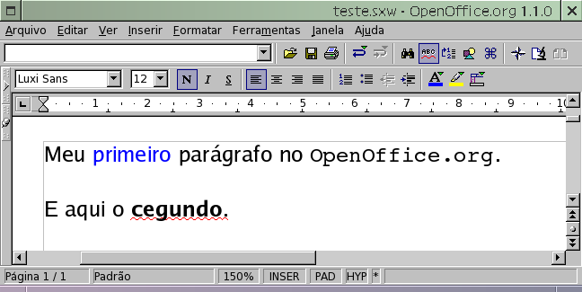
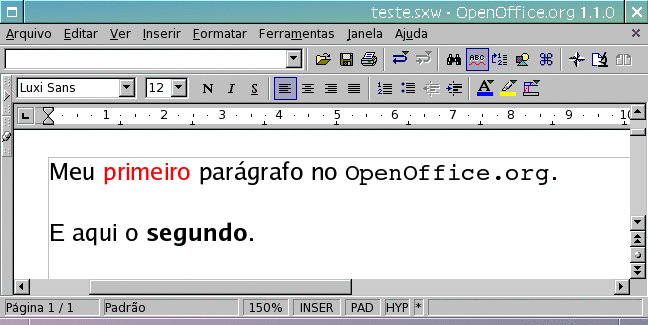

Aprenda como editar arquivos .SXW do OpenOffice.org diretamente no Vim!
Com a popularização do Linux, os arquivos com a extensão .sxw estão se proliferando em ritmo acelerado. São arquivos no formato do Writer, o poderoso processador de texto de código aberto, parte integrante da suíte OpenOffice.org.
Em situações normais, é preciso ter o Writer instalado na máquina para poder visualizar o conteúdo de um arquivo gravado em seu formato. Este artigo mostrará como visualizar e editar um arquivo .sxw usando um editor de textos comum, como o Vim.
Mas afinal, que formato é esse tal de .sxw? É um binário, algo compilado ou escrito em alguma linguagem estranha? Pelo contrário, como tecnologia recente e sem pretensões de estabelecer monopólio, nenhum formato novo foi inventado. Acompanhe:
$ file teste.sxw teste.sxw: Zip archive data, at least v2.0 to extract $
Um arquivo .sxw é simplesmente um arquivo compactado no formato ZIP. Como tal, fica fácil de manipulá-lo tanto na interface gráfica quanto na linha de comando. Vamos ver o que tem dentro desse ZIP:
$ unzip -l teste.sxw
Archive: teste.sxw
Length Date Time Name
-------- ---- ---- ----
30 08-30-04 20:14 mimetype
3009 08-30-04 20:14 content.xml
6144 08-30-04 20:14 styles.xml
1061 08-30-04 20:14 meta.xml
6694 08-30-04 20:14 settings.xml
752 08-30-04 20:14 META-INF/manifest.xml
-------- -------
17690 6 files
$
Seis arquivos, sendo cinco arquivos XML. O XML é um formato de marcação simples, similar ao HTML. A grande vantagem desse formato é que o seu conteúdo é texto puro, editável em qualquer editor de textos do sistema. O arquivos mais importante de todos é o content.xml, que contém o texto do documento e também a sua formatação.
O que faremos a seguir, é descompactar o ZIP e editar o texto. Depois basta compactá-lo novamente e abrir no OpenOffice. Mas antes, uma rápida olhada no conteúdo do documento teste.sxw:

Um texto curto com dois parágrafos, tendo uma palavra em azul e outra em fonte monoespaçada no primeiro, e uma palavra em negrito no segundo. A tarefa será trocar de azul para vermelho e corrigir o erro ortográfico.
Primeiro, é necessário descompactar o conteúdo do ZIP em um diretório limpo:
$ mkdir teste $ cd teste $ unzip ../teste.sxw Archive: ../teste.sxw extracting: mimetype inflating: content.xml inflating: styles.xml extracting: meta.xml inflating: settings.xml inflating: META-INF/manifest.xml $ ls -F META-INF/ content.xml meta.xml mimetype settings.xml styles.xml $
Para alterar o conteúdo do documento, basta editar o arquivo content.xml. Porém há uma pequena dificuldade: todo o conteúdo é guardado em uma única linha. Ao abrir o arquivo no editor de textos, o que se vê é uma grande sopa de letrinhas.
Para a edição ficar mais clara, com uma separação visual entre as marcações XML e seu conteúdo, é preciso inserir quebras de linha em pontos estratégicos. Dentro do Vim, execute o comando ":%s/>/>^M/g" para fazer com que cada marcação se inicie em uma nova linha (o ^M deve ser inserido pela combinação Ctrl+V, Enter). Caso prefira fazer isso pela linha de comando ou estiver utilizando outro editor, execute o seguinte comando:
$ sed -i 's/>/>\n/g' content.xml
Outro detalhe é que a codificação padrão dos caracteres dos arquivos XML é UTF-8, e não ISO-8859-1. Com isso, caso seu sistema não esteja configurado para o UTF, os acentos aparecerão estranhos como em "parágrafo". No Vim, use os seguintes comandos para poder editar o arquivo em UTF:
:set encoding=utf-8 :set termencoding=iso-8859-1
Pronto, agora basta editar o texto do arquivo conforme necessário. No início do arquivo estão várias marcações em XML com as definições de fonte, e estilos de parágrafo, que veremos adiante. O texto mesmo está no final do arquivo, com algumas marcações ao redor:
<text:p text:style-name="P1"> Meu <text:span text:style-name="T1"> primeiro</text:span> parágrafo no <text:span text:style-name="T2"> OpenOffice.org</text:span> .</text:p> <text:p text:style-name="P1"/> <text:p text:style-name="P1"> E aqui o <text:span text:style-name="T3"> cegundo</text:span> .</text:p>
Primeiro, vamos corrigir o erro ortográfico, trocando "cegundo" por "segundo". Outros textos também podem ser adicionados normalmente caso necessário, basta não confundi-los com o conteúdo das marcações XML, que são colocadas dentro de sinais menor e maior, "<assim>". Caso precise colocar os caracteres "<" e ">" no texto, use "<" e ">", respectivamente.
Já para trocar a cor da palavra "primeiro" é um pouco mais trabalhoso. Há uma separação entre o conteúdo e a sua formatação. Note que a palavra está marcada com um "text:span" e o conteúdo do atributo "text:style-name" é "T1". É esse estilo chamado T1 que contém as informações de formatação da palavra, no caso a cor que precisamos trocar. Procurando nas linhas acima, está a definição desse estilo:
<style:style style:name="T1" style:family="text"> <style:properties fo:color="#0000ff"/> </style:style>
Dentro da marcação de propriedades ("style:proprerties"), o atributo "fo:color" contém o texto "#0000ff", que é a definição da cor azul, escrita no formato #RRGGBB (Red, Green, Blue). Este formato usa números hexadecimais (0123456789ABCDEF) para indicar a intensidade de cada uma das cores base (Vermelho, Verde, Azul), que combinadas compõem a cor final. Para um vermelho puro, basta deixá-lo saturado (FF) e zerar o verde e o azul: "#ff0000".
Não é necessário saber indicar cores usando a notação RGB. A grande maioria dos programas gráficos possui uma paleta de seleção de cores onde o código é mostrado, ou outra alternativa é consultar amostras de cores, disponíveis na Internet (http://www.hitmill.com/html/color_safe.html).
E claro, além da cor da fonte, todos os outros atributos como negrito, itálico, alinhamento e cor de fundo, entre outros, podem ser adicionados e alterados dentro da marcação de propriedades. Segue um exemplo de um texto que foi colocado na fonte Luxi Sans, pintado de azul, aumentado para o tamanho 32, colocado em negrito, itálico, sublinhado, centralizado, e com fundo em verde.
<style:properties style:font-name="Luxi Sans" style:text-underline="single" style:text-underline-color="font-color" style:text-background-color="#00ff00" fo:font-size="32pt" fo:color="#0000ff" fo:font-weight="bold" fo:font-style="italic" fo:text-align="center" />
E assim o arquivo "content.xml" pode ser alterado livremente, adicionando-se texto e formatação. Só cuide para deixar a primeira linha do arquivo intacta: <?xml version ...>. Se a primeira linha ficar em branco, o OpenOffice não conseguirá ler o arquivo ("Erro de leitura").
Voltando a nossa tarefa: erro ortográfico já corrigido e "#0000ff" trocado por "#ff0000". Agora só resta remontar o arquivo .sxw e abri-lo no OpenOffice para conferir as mudanças.
Lembra que um .sxw é um ZIP? Então basta compactar todos os arquivos e pronto. É necessário usar o opção "-r" do comando zip para que os diretórios também sejam incluídos corretamente:
$ ls META-INF content.xml meta.xml mimetype settings.xml styles.xml $ zip -r ../teste.sxw * updating: mimetype (stored 0%) updating: content.xml (deflated 73%) updating: styles.xml (deflated 77%) updating: meta.xml (deflated 56%) updating: settings.xml (deflated 79%) updating: META-INF/manifest.xml (deflated 66%) adding: META-INF/ (stored 0%) $
Um detalhe interessante é que para regerar o .sxw, não é necessário voltar o arquivo XML para o seu formato original de tudo-em-uma-linha, ele pode ser zipado com as quebras de linha e o OpenOffice o entenderá normalmente.
E pronto, está feito o arquivo SXW "artesanal". Agora o teste final, a visualização do arquivo no OpenOffice, para se ter a certeza que está tudo certo:

Um último detalhe que foge ao escopo deste artigo, mas que merece ser mencionado, é que caso o documento possua imagens, estas ficarão armazenadas no diretório Pictures, dentro do ZIP. Assim como o texto, as imagens também podem ser alteradas conforme necessário, inclusive redimensionadas, sem corromper o documento. Os programadores do OpenOffice realmente fizeram um excelente trabalho na definição do formato do arquivo SXW.
E assim se edita arquivos SXW no Vim. As grandes vantagens deste procedimento são:
- Visualização rápida do conteúdo de um arquivo SXW, sem a necessidade de ter o OpenOffice instalado ou acesso à interface gráfica. Um comando prático para remover as marcações XML, restando apenas o texto é:
sed 's/<[^>]*>//g' content.xml | tr -d '\n' | fmt -w 70 - Edição de arquivos SXW em um ambiente limitado ou com poucos recursos, basta ter o comando
zipe um editor de textos comum. - Edição automatizada de arquivos SXW ("em batch"), aplicando alterações de texto e formatação, bem como tratamento de imagens.
- Não depender do abominável mouse para editar textos do Office ;)
Mais informações:
- Hacking Open Office (em inglês)